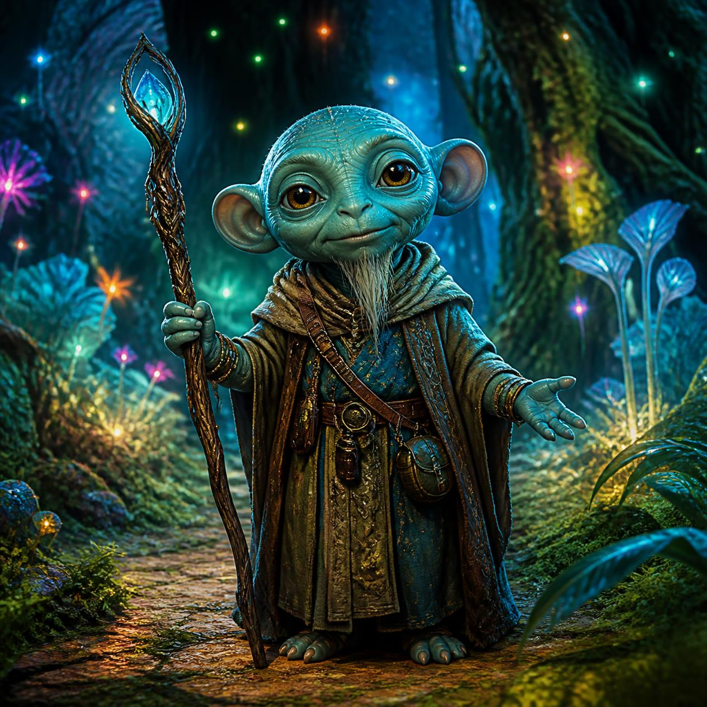
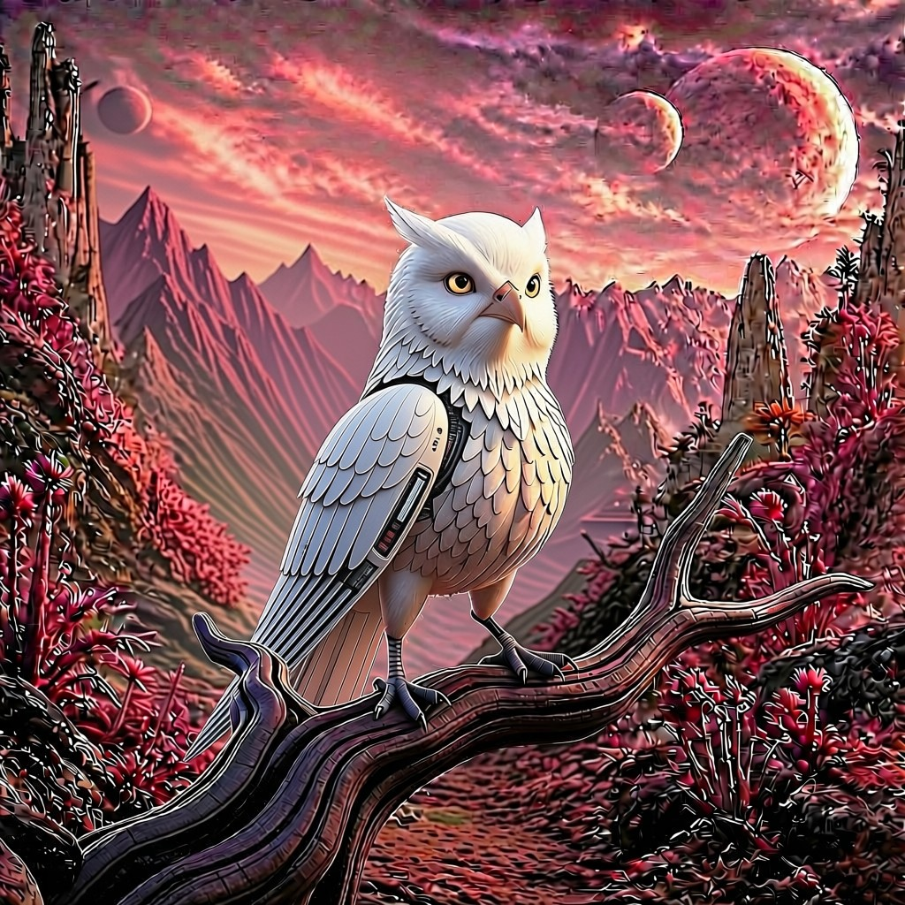

GUARDIÃO
Gorut
Sábio, paciente e intuitivo. Usa seu conhecimento para orientar e proteger quem precisa de ajuda.
HERÓIS E FORÇAS SOMBRIAS
Cada personagem possui uma história, habilidades e uma personalidade única.

Sábio, paciente e intuitivo. Usa seu conhecimento para orientar e proteger quem precisa de ajuda.

Observador e atento. Analisa os detalhes e identifica perigos antes de agir.

Criativa, livre e imprevisível. Gosta de descobrir novos mundos e encontrar soluções diferentes.

Independente e determinada. Planeja suas missões com inteligência e defende seus princípios.

Corajoso e leal. Acredita na esperança e luta pelo que considera justo.

Ambicioso e disciplinado. Busca poder, gosta de liderar e não desiste facilmente de seus objetivos.
Responda às perguntas e descubra qual personagem representa melhor suas escolhas.
Fazer o questionário ✦